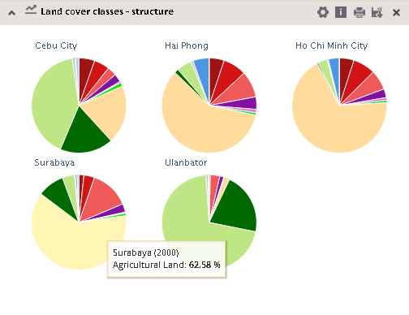
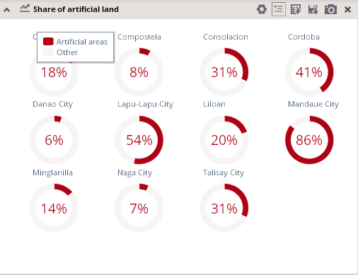
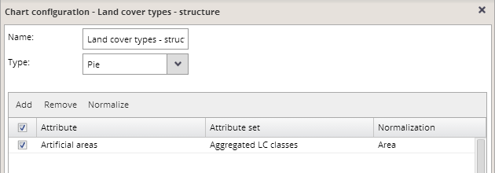

This type of data visualization is the most suitable one for displaying structures of analytical units. These structures usually show proportions of different classes on total denominator value.
Absolute value for each class can be viewed only via the hover function, while charts for all compared units have the same size.

The denominator can be either defined via normalization settings in the chart configuration dialog, or the sum of values for all classes included in the chart automatically used as a denominator.
Single-attribute pie charts
In case only one attribute is selected for the pie chart representation, the pie charts appear as follows, showing only a proportion of this single class on total denominator value for each unit:

In this case, normalization has to be set in the chart configuration dialog in order to define a denominator for this chart:
